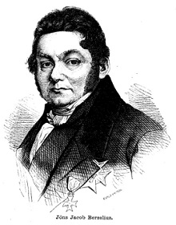

El concepto de estequiometría, es decir, de medida de las proporciones, fue introducido por Lavoisier, y defendido por el químico sueco Jöns Jacob Berzelius. Dicho químico afirmaba que las sustancias estaban compuestas por distintos elementos en proporciones constantes en peso. Esto es lo que se conoce como la ley de las proporciones definidas. Además, Berzelius es el primero en utilizar un concepto parecido al de enlace químico, sugiriendo el carácter electropositivo y electronegativo de los átomos. Esto es, al menos, lo que nos dice la historia. |
 |
No obstante, hay muchas cosas ocultas en la vida de Berzelius, como por ejemplo el hecho de que, cuando tenía dieciséis años y vivía en la pequeña ciudad de Linköping, uno de sus familiares decidió comenzar una granja. Como recoge el joven Jöns en su diario:
Había empezado por comprar gallinas y gallos, y como padece de mente ligera, compró tantos gallos como gallinas. Al cabo de pocos días, como es lógico, los gallos se habían peleado entre sí y se habían matado unos a otros. Sólo quedaron tres gallos al final.